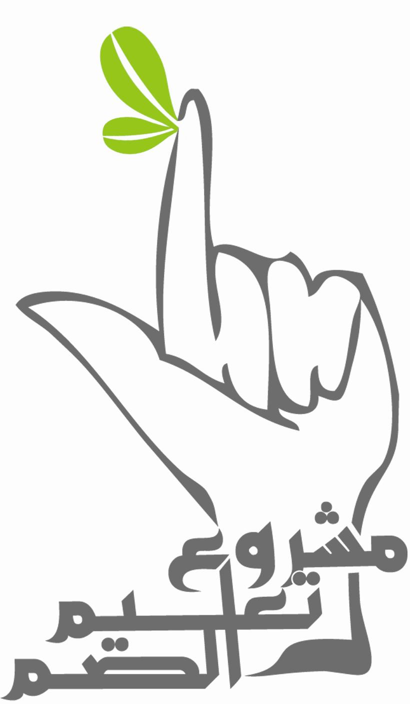
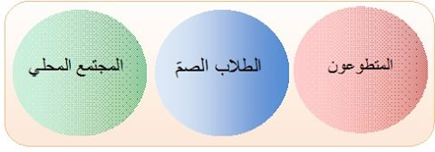

الباب الأول: المشروع و أهدافه.
- اسم المشروع: مشروع تعليم الصم 123 .
 |
تعريف المشروع: مشروع خيري يهدف إلى خدمة الصمّ من أجل أن يحصلوا على حقّهم في التعليم والمعرفة |
رعاية الصم ثقافياً واجتماعياً وتعليمياً ومهنياً وتوعية المجتمع بحقوق الصم ومؤهلاتهم وقدراتهم
دمج الصم بالمجتمع
المشروع قائم من أجل خدمة الصم، ولذلك فهو في المرحلة الحالية يستهدف ويتعامل مع ثلاث فئات أساسية

- الموقع الإلكتروني لمشروع تعليم الصم على شبكة الإنترنت هو www.eemaa-sy.com ، وهو موقع لا يزال قيد البناء ، وينتظر إطلاقه فور الحصول على الموافقات القانونية اللازمة لذلك ، وعنوان البريد الإلكتروني هو t3leem.al8m@gmail.com .
الطلاب الصم |
ونقدم لهم خدمات التعليم في المرحلتين الإعدادية والثانوية ، وصفوف محو الأُمية في اللغة العربية ، و التأهيل النطقي . |
المتطوعون |
الشباب المثقف والطلاب الجامعيون، المهتمون بتعلم لغة الإشارة ويملكون الحد الأدنى من المؤهلات المطلوبة للتطوع في المشروع . |
المجتمع المحلي |
عائلات الطلاب الصّم – الطلاب والشباب – المجتمع السوري عن طريق الإعلام . |
- تعليم الصم النموذجي: سيقتصر عدد المستفيدين من هذه الخدمة للعام الدراسي على صفين اثنين، أحدهما للمرحلة الإعدادية، والآخر للمرحلة الثانوية، وسيستوعب كل من واحد من الصفين ثمانية طلاب صم .
- توليد القاموس الإشاري التعليمي ليكون قادراً على التعبير واستيعاب المتطلبات اللغوية المختلفة.
- مشروع محو أمية الصم
- التأهيل النطقي للصم باستخدام نظام عبد الكريم عطايا
- مشروع النادي الاجتماعي التثقيفي للصم
- مشروع محو الأُمية الإشارية للمجتمع
- تأمين أجهزة سمع (مُعينات سمعية) للصم المحتاجين
- إجراء حملات إعلامية توعيوية تعرف المجتمع بحقوق الصم ومشاكلهم
توفير تدريب مهني للصم وإنشاء مشاريع صغيرة وتسويق منتجاتها
- - نعتمد في مجال التأهيل النطقي نظام عبد الكريم عطايا .
- - يتم اختيار الطلاب وفرزهم على أنواع الخدمات الثلاثة الحالية وفق الخطوات الموضحة في " الملحقE : قَبول الطلاب الصم" الصفحة 30.
- - للتعرف أكثر على المؤهلات المطلوبة للتطوع في المشروع ، راجع " الملحق E-1 : تحديد المتطلبات" الصفحة 33.
- - المشاريع التالي ذكرها والمعلمة بنقاط مطموسة، هي مشاريعٌ قائماً حالياً أو بدأت حديثاً، بينما المشاريع المعلمة بدوائر مفرغة، فهي مشاريع لا زالت قيد التطوير أو الدراسة، ولم يبدأ تنفيذها بعد.